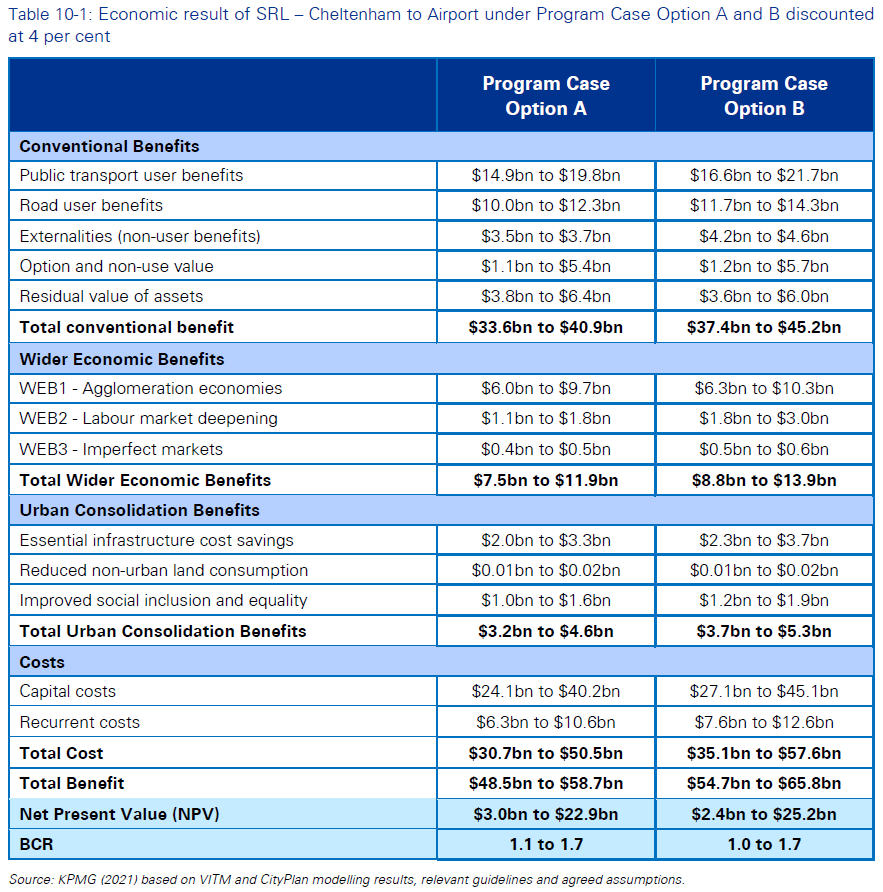
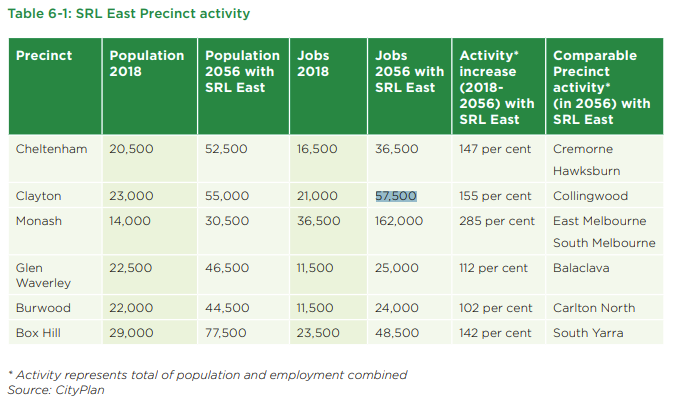

We have a broken process for evaluating costly government investments. The evolving plan for an underground railway through Melbourne's middle suburbs reminds us that we need something better.
The Victoria government is currently in the early stages of building what would likely be Australia's first $100-billion-plus infrastructure project – the Melbourne Suburban Rail Loop. That price tag would make it bigger than the national broadband network, but with the costs borne by just a quarter of Australia's population.
The Loop is currently wildly popular in Melbourne, as best I can tell. It also seems to be a favorite of Victorian premier Daniel Andrews, who announced it as a fait accompli before it had much assessment at all.
Andrews loves the Loop. Why? It's a mystery I've explored elsewhere on Troppo. The project seems unlikely – a mostly underground and hence expensive rail line through Melbourne's middle suburbs, whose spread-out nature minimises their potential capture area and dilutes a rail line's impact. To most transport experts, this doesn't seem a very good way to improve Melbourne's transport grid or foster the development of new urban hubs.
And if it doesn't pay off, the resulting debt could act as a drag on the state's economy for years.
So it really does merit someone running the ruler over it fairly dispassionately, to see if it will help or hinder the state. And that evaluation needs to look at all the social benefits as well as all the social costs. Those benefits and costs are many and various, so the only really comprehensive way to do this evaluation is to attach a common value to each of them and then compare. In other words, we need a benefit-cost assessment.
Infrastructure Victoria, sidelined
In theory, Victoria has just the body to do such an assessment: Infrastructure Victoria, created in 2015. Andrews said at the time that it would “take short-term politics out of infrastructure planning, and keep our pipeline of major projects full”. It would ensure "Victoria’s immediate and long-term infrastructure needs are identified and prioritised based on objective, transparent analysis and evidence”. It would “prioritise the projects that deliver the best results”.
Here's the twist: once announced, the Loop quickly became government policy. And at that point, Infrastructure Victoria could by law no longer evaluate it.
So instead, the Loop has what the government calls a "business case", which it has represented as proof that the Loop makes sense. This business case comes from KPMG, working for the government. It appeared in August 2021 (PDF link).
We'd have a lot more reason to trust the business case if it were done under the eye of a some assessment group with less of a vested interest than KPMG. Specialist bodies like Infrastructure Victoria seem too easily sidelined, and sidelining them won't attract political penalty: Infrastructure Victoria seems just too small to catch the public's attention. A better alternative might be Nick Gruen's suggested independent government-wide institution to monitor and evaluate policymaking and service delivery – the Evaluator-General.
But for the moment we have this KPMG document, from a firm with an obvious interest in delivering for its client, the government.
The Loop's business case says yes (just)
That business case document gives us some estimates of the Loop's key numbers. Summary: The Loop's business case looks fragile.
KPMG argues that building the project's north and east legs by 2053 would deliver a benefit-cost ratio of between 1.1 and 1.7. Go faster and harder, to finish by 2043, it says, and that ratio would drop to between 1.0 and 1.7. (A benefit-cost above 1 means a project has more benefits than costs, suggesting it should go ahead.)

Benefit-cost ratios for the Melbourne Suburban Rail Loop, as calculated by KPMGThat KPMG assessment uses a 4.0 per cent discount rate. This has been controversial: it's much lower than what has been used previously and lower than the 7.0 per cent that Federal Treasury and Infrastructure Australia recommend. But it seems at least arguable that previous project assessments have used too high a discount rate, an argument made by the Grattan Institute's SRL-sceptical Marion Terrill (PDF link), among others. (Australian 30-year government bonds are current trading at 2.56 per cent.)
Another parameter of the project seems more questionable, though: its overall cost. KPMG estimates that building the project's northern and eastern legs by 2053 would cost $48.5bn to $58.7bn. With the western leg still unestimated, that puts the total project cost at (very) roughly $65bn to $85bn. That is far more than the original $50bn, underlining the relentless upward trend of rail cost estimates after their initial announcements. But most observers suspect the bill still has further to rise.
The benefit-cost ratio struggles to the 1.0 line
Several points flow from all this:
- The lower 4.0 per cent discount rate makes all infrastructure projects in Australia look more attractive. It doesn't change the Suburban Rail Loop's lowly position in the merit order.
- The report would have informed us better if it had results for both 4.0 and 7.0 per cent discount rates. But the higher rate would have cut some of the benefit-cost ratios to below the all-important 1 level.
- If the costs are an underestimate, the benefit-cost ratio quickly drops below 1 again, suggesting the project is unviable. As transport economist Professor John Stanley told The Age's Timna Jacks, projects with higher uncertainty about costs need to deliver higher benefit-cost ratios.
- The business case doesn't separate benefit-cost estimates for the northern leg and the eastern leg, which is to be built first. The obvious suspicion is that one of these has a benefit-cost ratio below 1.
Perhaps the most illustrative aspect of the business case presentation is the way it goes out of its way in certain places to avoid presenting facts that we can assume they have. The screenshot below shows what I mean.

What's missing here? Any estimate for 2056 activity without the SRLEconomies and activity centres will grow over the course of 28 years from 2018 to 2056. So of course, what you want to see here is an estimate of 2056 activity without SRL East. And that's just what the comparison table leaves out.
Similar gaps occur across the documentation.
Wanted: an institution with clout
This is the business case document's real problem. It is a presentation from a hired project team rather than a disinterested assessor. It's intended to keep the Melbourne Suburban Rail Loop viable, rather than to measure the project dispassionately. And it shows.
What we need is an outside assessor with some institutional heft. It may be that no government would now set up such a body. But if they could be convinced to create it, an Evaluator-General seems like a very good idea indeed.
Thanks David, I think Infrastructure Australia has suffered a similar fate. If we could stiffen governments' spine a bit more it would certainly be good and some statutory body would be helpful. The whole history of the loop has been an outrage. It's even more disappointing that this is a government that seems to be cruising to a victory — how sad they can't use their political capital to do something more useful. Presumably it's only decorum that is stopping the Auditor General from producing their own analysis. There's also a more general point here. We bake conflicts of interest into government like this constantly. Regulatory review statements are produced by the departments that are trying to get regulation through for their minister. Business cases are produced by departments seeking to get funding. (Sometimes these arrangements make so little sense that they establish a Catch 22 which stymies all progress.) And on it goes. They should be produced by an independent agency. And I don't mean by that the Department of Treasury and Finance which has a culture which seeks to be an equal and opposite counterweight to the 'can do' approach to their responsibilities of the line departments.
Naturally nick has made the point i was going to
To this non-economist, the business case seems a good example of precisely how not to use benefit cost analysis. Tweak the variables so that the resulting BCA scrapes over the threshold of 1:1. It's impossible to ascribe any normative or robust meaning to these figures. The figure would make more sense if concurrently, BCAs for alternative uses of the discretionary sums available could be published. Investment in education or public libraries? Probably 1:9. Investment in land resource mapping? Probably 1:50. Investment in environmental repair? Probably 1:100. Investment in climate adaptation? Probably a multiple of 100. Why on earth do we tolerate the fig leaves of economic analyses used to justify transport projects? Hardly any I have seen rise above 1:2. We know the answer to that, so while I agree with David Walker's analysis, I don't see that erecting another oversight body will solve the core issues which include the breakdown of analytical capacity of our governments and capture of governments by the construction industries.
It's also worth highlighting that Urban Consolidation Benefits are a term that are not in the Infrastructure Australia standard, nor have they been used in any other infrastructure project in Victoria. Even the Wider Economic Benefits were ridiculed by the Andrews government as "cooking the books" for East-West link and that it was being used to hide a true ratio of 0.4. Removing these variables bring it below 1.